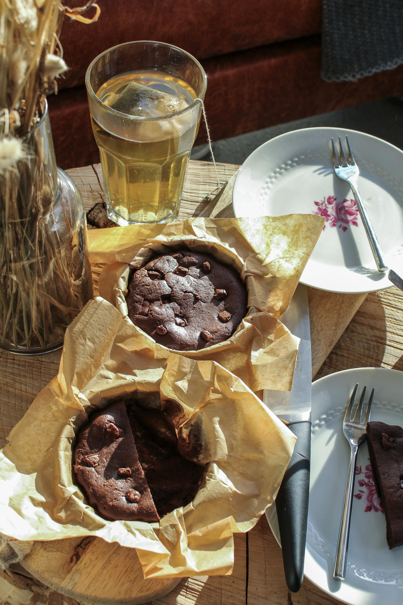

Mugcake
Back to all recepies

This chocolaty mugcake is perfect for stay-at-home cozy nights
I used to love doing this recepie when I was younger. It's very simple to do, and the ingredients are extremly common in most households.
Note that it is possible to double or triple the recepie by mixing in a bowl before dividing equally.
Ingredients
- 3 tbsp Flour
- 2 tsp Cocao powder
- 2 tbsp Brown Sugar
- 1/4 tsp Baking powder
- 3 tbsp Milk
- 1 tbsp Canola Oil
- Chocolate chips
Steps
- In a microwave safe cup, mix the flour, brown sugar, cacao and baking powder. Add the milk and oil.
- With a fork, mix until smooth. Add some chocolate chips on top.
- Bake the cake in the microwave for 45 seconds. Let it cool for 5 minutes to allow the cake to finish baking.